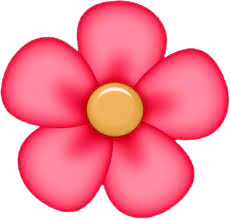
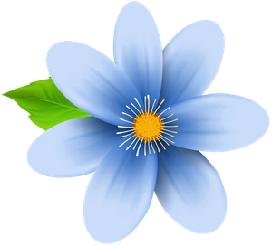

Spending time with Nature is good for health and well-being


We started our activities in Belgravia and now we want to spread the love! We believe in doing something to help wildlife in our own streets, with our own hands. We have lots of ideas and initiatives we want to share with schools, businesses and the community at large. One idea we love, is seeing sad and dull places, no matter how small, become vibrant with colour and life. We also hope to learn more about what makes a good home for nature, and other ways we can help. Our passion is to create a more nature-friendly neighbourhood, and add colour and beauty for people to enjoy. A bonus with wildflowers is that it’s not a problem if their seeds spread, and they don’t need a lot of maintenance. We are keen for others to join in and come up with ideas too; we want to share!
We are non-profit. If you want to find out more about wilding activities in your area, or you would like to set up your own rewilding community, then do contact us.
Meadows and White-Clover are Good for Water Shortages (Summer 2022).
During such times when water is scarce, meadows are a good alternative to lawns. Meadows being more drought tolerant than traditional lawns, comprise of many deep rooted plants that renain green, whereas grasses may go brown. "Non grass lawns" such as white-clover, self-heal and creeping Jenny are more robust as they require no water. Good to know.
The re-introduction of Bisons in the UK after an absence of a few thousand years is a welcome respite and good news in an age of mass extinction, much of it due to human intervention (Summer 2022).
The project is part of a wider pioneering scheme to reintroduce large herbivores to one of south-east England’s largest areas of ancient woodland. You can read more about it in the report here at 'English Nature'. Affectionately known as woolly bulldozers, they were reintroduced during summer 2022 to help regenerate the landscape. As quoted in the report 'This shifting mosaic of open grassland, scrub and
closed tree-cover was created and maintained by large herbivores, particularly aurochs (wild
ox), ponies and bison. As a consequence shade-intolerant species such as oak Quercus spp
and hazel Corylus avellana were able to survive competition from species such as beech
Fagus sylvatica. This landscape, and the grazing processes that shaped it, provide the origin
of much of the flora and fauna that we seek to conserve'. Now that is a project worth following.
De-Extinction (August 2022)
An interesting article featured in The Saturday Telegraph Magazine focuses on 'de-extinction' , a growing movement of activists and scientists trying to revive lost species via genetic engineering. The aim is to 're-stabilise' the Eco-systmes of the Earth by the restoration of key species whose ecological role has not been replaced. By so doing, they hope to inspire a new generation of conservationists into developing advanced technologies and thus help preserve existing species facing climate change. You can explore more in the 'Anthropocene Magazine'here.
We love the latest article featured in The Mail by Jane Fryer (June 22, 2022)
'A flower meadow that's (ok a few weeks late) truly fit for a Queen'.
~ ~ Précis by Sara Oliver ~ ~ It is a truly beautiful sight to behold in the moat at the Tower of London, and it looks as if it is here to stay during the summer months. The colours of blue, purple and red merging into gold, orange and yellow are vibrant and fill the air with lovely scent and joyous uplifting vibes in the heart of London especially on a sunny day. The birds are happy, the wildlife is buzzing with joy and life is wonderful!
The project was a feat of ingenuity performed by the team of Royal Historic Palaces. They imported tons of special soil and planted millions of seeds from different seed mixes into sections, all sown by hand. It looks blooming marvellous and fit for a Queen!